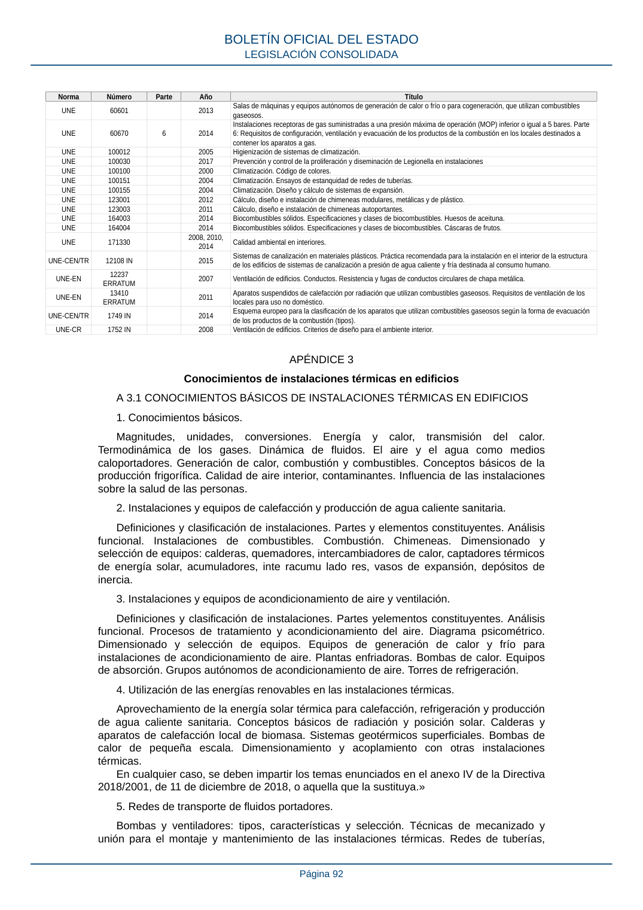

RITE · APÉNDICE 3. Conocimientos de instalaciones térmicas en edificios · versión 2022-08-02
SHA256: ad1680c83bf4c7f5c656af1794c32ad0669ad9f36ac293737ff3f95177ff7b26 · página física 92 de 97 · métodos de encabezado
solo si están cotejados.
Formatos: Markdown · JSON de bloques · PDF p. 92 · imagen PNG
Norma Número Parte Año Título UNE 60601 2013 Salas de máquinas y equipos autónomos de generación de calor o frío o para cogeneración, que utilizan combustibles gaseosos. UNE 60670 6 2014 Instalaciones receptoras de gas suministradas a una presión máxima de operación (MOP) inferior o igual a 5 bares. Parte 6: Requisitos de configuración, ventilación y evacuación de los productos de la combustión en los locales destinados a contener los aparatos a gas. UNE 100012 2005 Higienización de sistemas de climatización. UNE 100030 2017 Prevención y control de la proliferación y diseminación de Legionella en instalaciones UNE 100100 2000 Climatización. Código de colores. UNE 100151 2004 Climatización. Ensayos de estanquidad de redes de tuberías. UNE 100155 2004 Climatización. Diseño y cálculo de sistemas de expansión. UNE 123001 2012 Cálculo, diseño e instalación de chimeneas modulares, metálicas y de plástico. UNE 123003 2011 Cálculo, diseño e instalación de chimeneas autoportantes. UNE 164003 2014 Biocombustibles sólidos. Especificaciones y clases de biocombustibles. Huesos de aceituna. UNE 164004 2014 Biocombustibles sólidos. Especificaciones y clases de biocombustibles. Cáscaras de frutos. UNE 171330 2008, 2010, 2014 Calidad ambiental en interiores. UNE-CEN/TR 12108 IN 2015 Sistemas de canalización en materiales plásticos. Práctica recomendada para la instalación en el interior de la estructura de los edificios de sistemas de canalización a presión de agua caliente y fría destinada al consumo humano. UNE-EN 12237 ERRATUM 2007 Ventilación de edificios. Conductos. Resistencia y fugas de conductos circulares de chapa metálica. UNE-EN 13410 ERRATUM 2011 Aparatos suspendidos de calefacción por radiación que utilizan combustibles gaseosos. Requisitos de ventilación de los locales para uso no doméstico. UNE-CEN/TR 1749 IN 2014 Esquema europeo para la clasificación de los aparatos que utilizan combustibles gaseosos según la forma de evacuación de los productos de la combustión (tipos). UNE-CR 1752 IN 2008 Ventilación de edificios. Criterios de diseño para el ambiente interior. APÉNDICE 3 Conocimientos de instalaciones térmicas en edificios A 3.1 CONOCIMIENTOS BÁSICOS DE INSTALACIONES TÉRMICAS EN EDIFICIOS 1. Conocimientos básicos. Magnitudes, unidades, conversiones. Energía y calor, transmisión del calor. Termodinámica de los gases. Dinámica de fluidos. El aire y el agua como medios caloportadores. Generación de calor, combustión y combustibles. Conceptos básicos de la producción frigorífica. Calidad de aire interior, contaminantes. Influencia de las instalaciones sobre la salud de las personas. 2. Instalaciones y equipos de calefacción y producción de agua caliente sanitaria. Definiciones y clasificación de instalaciones. Partes y elementos constituyentes. Análisis funcional. Instalaciones de combustibles. Combustión. Chimeneas. Dimensionado y selección de equipos: calderas, quemadores, intercambiadores de calor, captadores térmicos de energía solar, acumuladores, inte racumu lado res, vasos de expansión, depósitos de inercia. 3. Instalaciones y equipos de acondicionamiento de aire y ventilación. Definiciones y clasificación de instalaciones. Partes yelementos constituyentes. Análisis funcional. Procesos de tratamiento y acondicionamiento del aire. Diagrama psicométrico. Dimensionado y selección de equipos. Equipos de generación de calor y frío para instalaciones de acondicionamiento de aire. Plantas enfriadoras. Bombas de calor. Equipos de absorción. Grupos autónomos de acondicionamiento de aire. Torres de refrigeración. 4. Utilización de las energías renovables en las instalaciones térmicas. Aprovechamiento de la energía solar térmica para calefacción, refrigeración y producción de agua caliente sanitaria. Conceptos básicos de radiación y posición solar. Calderas y aparatos de calefacción local de biomasa. Sistemas geotérmicos superficiales. Bombas de calor de pequeña escala. Dimensionamiento y acoplamiento con otras instalaciones térmicas. En cualquier caso, se deben impartir los temas enunciados en el anexo IV de la Directiva 2018/2001, de 11 de diciembre de 2018, o aquella que la sustituya.» 5. Redes de transporte de fluidos portadores. Bombas y ventiladores: tipos, características y selección. Técnicas de mecanizado y unión para el montaje y mantenimiento de las instalaciones térmicas. Redes de tuberías, BOLETÍN OFICIAL DEL ESTADO LEGISLACIÓN CONSOLIDADA Página 92
